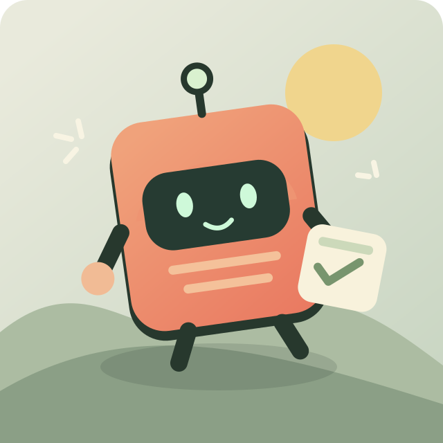

01 →
Start with a point.
One idea, a specific hook, and a reason to keep watching. Write for someone listening, not reading a slide.
Open source. Made for the story.
Turn a good idea into a reel worth watching. A portable toolkit for AI-assisted video, with expressive art, a human pace, and captions right where you look.
Ideas in. Editable files out.
Your project stays yours.
Hebrew narration & captions · English CC available
Press play to hear the narration.
ONE PROJECT.
MORE PLACES TO MAKE.
LESS TEMPLATE. MORE INTENTION.
A reel is a small story. Its pictures, voice, and words should all move that story forward.
One idea, a specific hook, and a reason to keep watching. Write for someone listening, not reading a slide.
Illustrate the thing being explained. Change the composition when the idea changes. Let the image do some talking.
Centered captions, readable contrast, and a steady frame. Make the point easy to follow on a small screen.
A LITTLE LESS GUESSWORK.
Artwork sets the scene. A few well-timed words do the rest. Explore a caption layout below, then make it your own in the project file.
An interactive layout study. The CLI renders your actual video.

A SIMPLE, EDITABLE WORKFLOW.
Use your preferred AI tools or make things by hand. ReelKit brings the pieces into one project.
Shape the hook, script, and scenes. Use the repository’s agent instructions to carry the creative direction between environments.
Draw, generate, or source illustrations. Put the assets in your project and give each scene a clear purpose.
Bring a recording or generated narration. Time the captions to the words, with pauses that give the joke or idea room to land.
Check a draft, adjust the editable JSON, and render the MP4. The files live with the project, ready for the next revision.
SMALL TOOLKIT. OPEN POSSIBILITIES.
Clone the repo, install the package, and create a project. Start with a draft. Make it good.
Read the setup guideRequires Python and FFmpeg. See the README for versions, OS setup, and cloud environment requirements.
# Clone the toolkit
git clone https://github.com/alexkubica/reelkit.git
cd reelkit
# Install in your Python environment
python -m pip install -e .
# Create a project and render a draft
reelkit init my-reel
reelkit render my-reel/project.json --draftRun it locally or in a configured cloud environment. Choose your own art and voice tools. Use assets you have permission to publish, and keep credentials out of your project.
Build something good